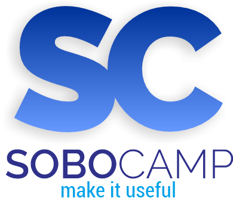

"Empowering Digital Solutions with Lifetime Integrity"
we make IT useful.
SOBOCAMP merupakan unit usaha mandiri (software house) yang bergerak di bidang teknologi informasi dan pengembangan perangkat lunak berbasis di Jawa Tengah. Sobocamp melayani jasa pengembangan sistem informasi kustom, baik berbasis web-responsive maupun aplikasi manajemen internal. Mitra kami meliputi pelaku UMKM, koperasi, sektor swasta, hingga lembaga pendidikan (SD/SMP/SMA/SMK).
Kini, Sobocamp berkomitmen penuh untuk menjawab tantangan era digitalisasi dengan menyediakan source code yang 100% orisinal, andal, bebas dari batasan lisensi perangkat, serta memberikan jaminan purnajual berupa Garansi Seumur Hidup (Lifetime Bug Warranty). Kode program yang kami susun dirancang dengan arsitektur yang bersih, menjadikannya sangat adaptif untuk kebutuhan operasional maupun sebagai referensi belajar bagi para pengembang dan akademisi.
"Berbekal dedikasi dalam arsitektur kode yang bersih dan orisinal, Sobocamp berkomitmen untuk terus melayani pengembangan sistem secara profesional dan berintegritas."
Prinsip dasar kami dalam membangun produk digital berkualitas tinggi demi kepuasan mitra jangka panjang.
Menjadi software house terpercaya di Indonesia yang mampu mentransformasikan proses konvensional menjadi digital melalui sistem yang andal, aman, mudah digunakan, serta mendukung kemandirian teknologi nasional.
Pembuatan perangkat lunak berbasis web kustom sesuai kebutuhan spesifik bisnis. Menggunakan ekosistem modern: PHP (Laravel/CodeIgniter), MySQL, Bootstrap, AJAX, & JQuery.
Platform manajemen tata kelola internal sekolah dan instansi. Mencakup digitalisasi administrasi, database guru/siswa, dan pelaporan dinamis.
Menerima siswa SMK dan mahasiswa magang. Dibimbing langsung dalam proyek riil mempelajari standarisasi industri (Clean Code & MVC Architecture).
Kemitraan khusus SMK Jurusan PPLG/TJKT meliputi penyelarasan kurikulum sekolah dengan kebutuhan industri serta penyediaan modul proyek.
Layanan peningkatan skill pemrograman (HTML, CSS, PHP native, Framework Laravel/CodeIgniter) untuk siswa, mahasiswa, dan guru.
Konsultasi teknis penataan data, migrasi database lokal (XAMPP Localhost) ke Online Hosting/VPS, dan optimasi keamanan sistem.
Pusat kendali data institusi untuk mengelola siklus akademik siswa secara transparan, mulai dari penerimaan, pemetaan kelas, hingga riwayat perkembangan belajar.
Sistem pencatatan kehadiran harian siswa dan tenaga pendidik guna mempermudah kontrol kedisiplinan serta otomatisasi laporan bulanan.
Aplikasi pembukuan administrasi pembayaran sekolah untuk melacak tagihan iuran bulanan (SPP) maupun sumbangan sukarela secara real-time.
01.Cakupan Garansi: Sobocamp memberikan garansi penuh seumur hidup terhadap kesalahan logika kode (system bug) atau kegagalan fungsional sistem (system error) yang bersumber dari source code asli produk kami.
02.Layanan Perbaikan Gratis: Segala bentuk perbaikan bug kritis yang dilaporkan oleh klien tidak akan dikenakan biaya tambahan apa pun secara permanen.
03.Kemandirian Infrastruktur: Garansi tetap berlaku baik saat aplikasi dijalankan pada server lokal (Localhost/XAMPP) maupun di lingkungan production server (Cloud/VPS Hosting).
04.Batas Pengecualian: Garansi purnajual tidak mencakup kerusakan sistem akibat modifikasi kode secara mandiri oleh pihak luar, serangan siber (malware/hacking akibat kelalaian kredensial hosting klien), atau kerusakan hardware.